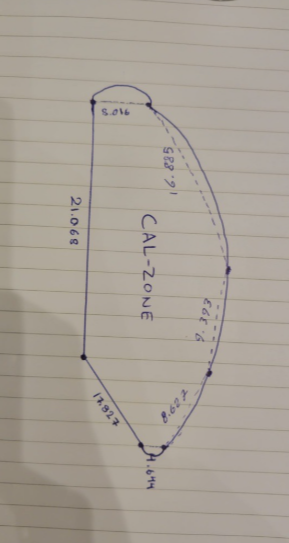

Schematic footprint from your sketch. Solar and cooling outputs are preliminary engineering estimates.
From sunlight to cooling
Temperature with distance
Along outlet 1’s direction, at the occupied layer. Ambient wind can move the plume sideways. No obstacle or buoyancy solution.
Energy, cooling & recovered water
Live values follow the studio time. Daily totals integrate the selected weather scenario in 15-minute steps.
Power across the day
Solar AC DX loadNight solar output is zero. Surplus is exported or curtailed; no battery is modeled.
Condensate recovery
L/hMoisture removed at the coil: dry-air mass flow × decrease in humidity ratio. Recovery assumes all condensate reaches the drain.
Operating schedule
Coil & electrical calculation
LiveWhat the cooling map means
An upwind finite-volume solver transports a supply-air fraction through a prescribed wind and jet field. The plotted temperature is an occupied-layer average, so a near-outlet cell is warmer than the undiluted supply. The flow vectors are prescribed; full CFD, tree wakes, equipment blockage and buoyancy are not solved.
The cost of your design
Itemized, editable allowances. Equipment prices require Bahrain quotations; the Deye reference is an advertised regional price.
Capital expenditure
One timeOperating expenditure
Per yearAnnualized selected-day scenario × operating days. This is not a weather-year forecast. No cost is assigned to existing trees or exercise equipment.
Lifecycle calculation
Constant real annual costs; one inverter replacement in year 12 when within the chosen horizon. No residual value, finance charges, carbon credits or unquoted future DX replacement costs are included.
Assumptions are part of the result.
Every layer has a different level of certainty. Use this tool to compare concepts and plan measurements.
Ratings & climate
Manufacturer equipment ratings and Bahrain monthly meteorological summaries. Availability of exact equipment models is unconfirmed.
Coupled balances
Geometric shadow coverage, moist-air heat and water balances, estimated PV output, and arithmetic project costs.
Site & performance
Boundary bearings, tree positions, hourly weather, irradiance, mixing, high-ambient derating, and most prices need measurement or quotations.
Geometry & shade
The uploaded sketch is treated as a seven-edge schematic polygon. Length labels were transcribed as approximately 21.068, 17.827, 1.644, 8.087, 9.393, 16.885 and 5.016 m. The curved edges are approximated by chords. Assumed bearings close the polygon; this is one possible shape, not a unique surveyed reconstruction.
Changing width or depth rescales the schematic. North is an editable assumption. Six exercise stations and the trees are placed illustratively. Ground shadow coverage uses a 0.6 m sampling grid clipped to the footprint; overlapping shadows are counted once.
Canopy height moves the shadow; it does not create extra panel area. Shade primarily lowers radiant exposure. The app reports a shortwave mean radiant temperature (MRT) equivalent, and does not assume an arbitrary dry-bulb air reduction from shade.

Weather & solar electricity
The location is a Muharraq city coordinate, not a surveyed GPS position. Automatic mode generates daily temperature and humidity curves between the reported mean daily extremes. It is not live weather or an observed hourly record. Wind at occupant height is a manual assumption.
× [1 + γ × (Tcell − 25)] × loss factors
PAC = min(PDC × ηinv, total inverter capacity)
Solar geometry follows approximate NOAA equations. Irradiance is a clear-sky envelope with an adjustable atmospheric factor, not measured Bahrain solar radiation. Module temperature uses NOCT = 45°C. The model includes tilt, approximate row and tree shade, 2% DC wiring loss, editable soiling and inverter clipping. Bifacial rear-side gain is not counted.
DX cooling & condensate
h = 1.006 T + w (2501 + 1.86 T)
Qcoil = ṁdry (hin − hout)
water [L/h] ≈ 3600 ṁdry (win − wout)
Pressure is 101.325 kPa. Coil outlet conditions are calculated using an assumed apparatus dew point and a minimum bypass fraction, constrained by the available total capacity. High-ambient capacity and power corrections are editable sensitivity assumptions, not fitted manufacturer curves. Published gross capacities are used; unverified fan heat is not separately corrected.
Only active units consume full modeled power. Units stop below 24°C, outside the operating schedule or above a published ambient limit. A solar-following mode stages whole units; it still assumes a grid reference. Compressor starting, minimum run time and phase transients need electrical design.
Heavy DX machines sit on pads beside or away from canopy pillars; only ducts / outlets attach to the supports. Condenser heat is assumed fully exhausted outside the occupied area. No local humidity or cooling guarantee follows from condensate production.
Airflow map & limits
T(x,y) = Tamb − f(x,y) (Tamb − Tsupply)
The 64-column finite-volume grid solves a steady passive supply-air fraction f. Wind and decaying outlet jets supply the velocity field. Boundary fraction is zero, representing ambient dilution; vertical exchange is a simple sink. Local source terms use supply volume divided by cell volume. The result is constrained to 0 ≤ f ≤ 1.
This is a reduced-order transport model, not validated CFD. It does not solve momentum, turbulence, buoyancy, obstacle wakes, conjugate heat transfer, occupant heat or surface thermal storage. Grid convergence and field validation are still needed. Use COMSOL or a validated CFD workflow for final design.
For the competition, measure wind, dry-bulb temperature, RH, globe temperature and electrical input at several distances. Calibrate mixing and compare against an uncooled shaded control area.